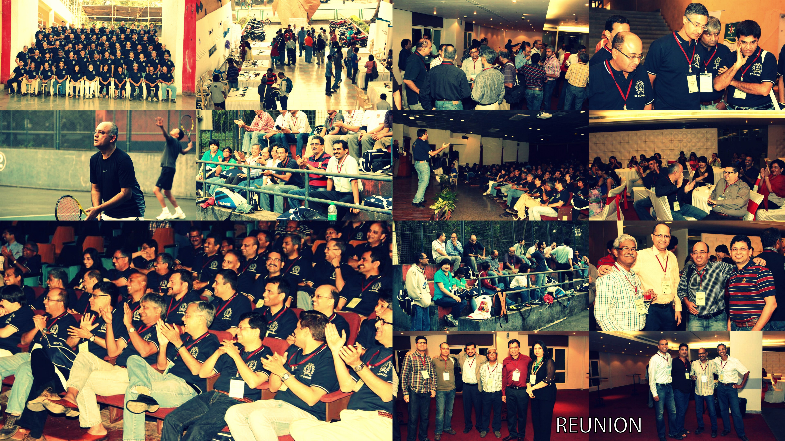
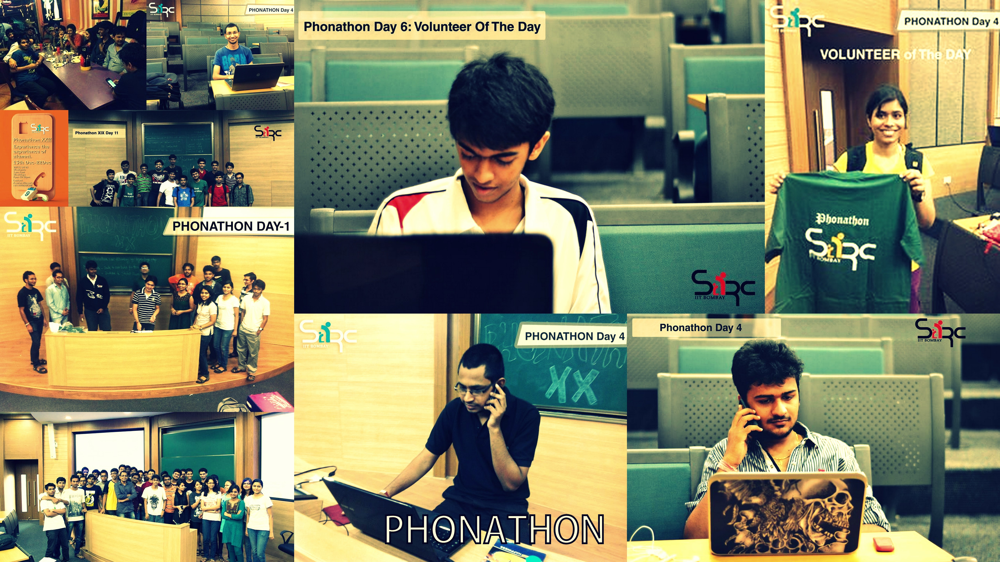
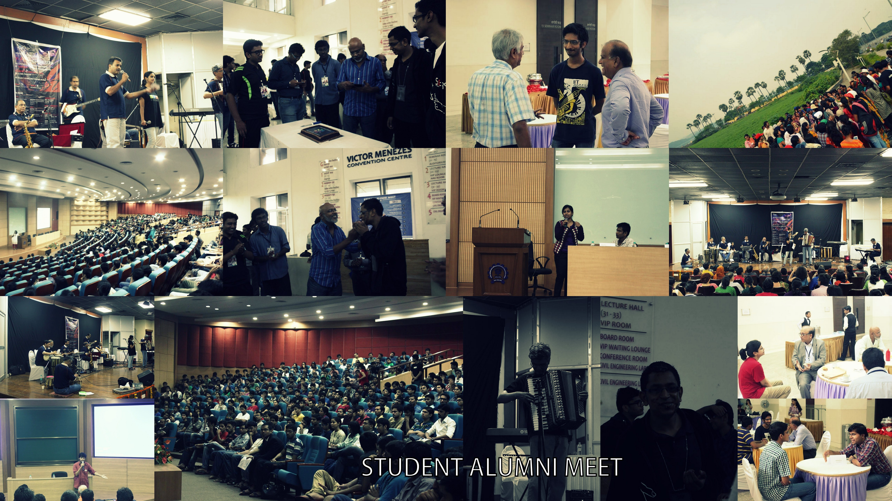

Quick Summary of SARC Recent Events
Reunion
SARC organized the Reunion of Silver Jubilee Batch of 1988 and Decennial Batch of 2003 in collaboration
with the Alumni Association at the IITB campus in the last week of 2013.
The event was a huge success - alumni interacted with students, played sports like in old days,
visited their respective hostels and departments, hung out with each other and reminisced about their college life. Check out some of the key moments of this reunion below.

Phonathon XXII
Phonathon XXII was held from 13th Dec - 22nd Dec. Phonathon report will be updated soon. For more information visit phonathon.sarc-iitb.org

Student Alumni Meet 3
Student Alumni Meet is the alumni-student fest in which many events like panel discussion, break the ice, mock interviews, core weekends, alumni-student sport matches etc. are held to develop relationships between alumni and students. The 3rd edition of SAM was held on 5th and 6th October 2013. For more information visit sam.sarc-iitb.org/
